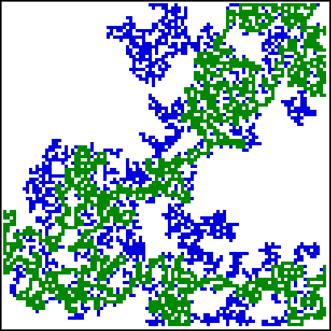

| There are (at least) two other fractals associated with percolation: the backbone and the hull. |
| The backbone is that part of a spanning cluster that cannot be separated from both ends of the cluster by filling in a single cell. |
| If the spanning cluster is filled with a fluid (e.g., oil) which we try to push out one end of the cluster by pumping another fluid (e.g., water) into the other end, the backbone holds the fluid which can be pumped out. |
| Simulations indicate the backbone has dimension about 1.61, noticeably less than the dimension of the spanning cluster. |
| Here we see the backbone in green, with the spanning cluster in blue. |
|  |
| The hull is roughly the boundary between the spanning cluster and the filled sites of the lattice. |
| A cell belongs to the hull if |
| (1) it shares an edge with a cell of the spanning cluster, and |
| (2) one of the four neighbors of the cell is connected through filled sites to the edge of the lattice. |
| Here we say filled cells are connected if they share an edge or a corner. |
| The hull has dimension 7/4 and is a self-affine fractal. |
| In 1985 Sapoval, Rosso, and Gouyet showed that diffusion can be modeled as the hull of a percolation cluster. |
| This is surprising, since the diffusion equation seems to work very well, and yet treats the diffusing substance as continuously distributed. |
| There is good reason to believe the diffusion front is a fractal, and the scale invariance suggests this front may grow into a macroscopically observable fractal interface. |
Return to percolation.